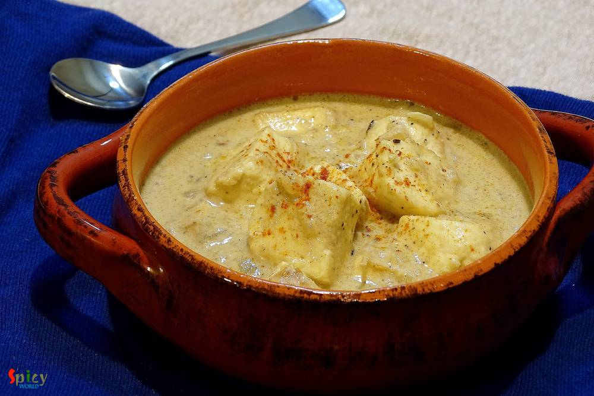
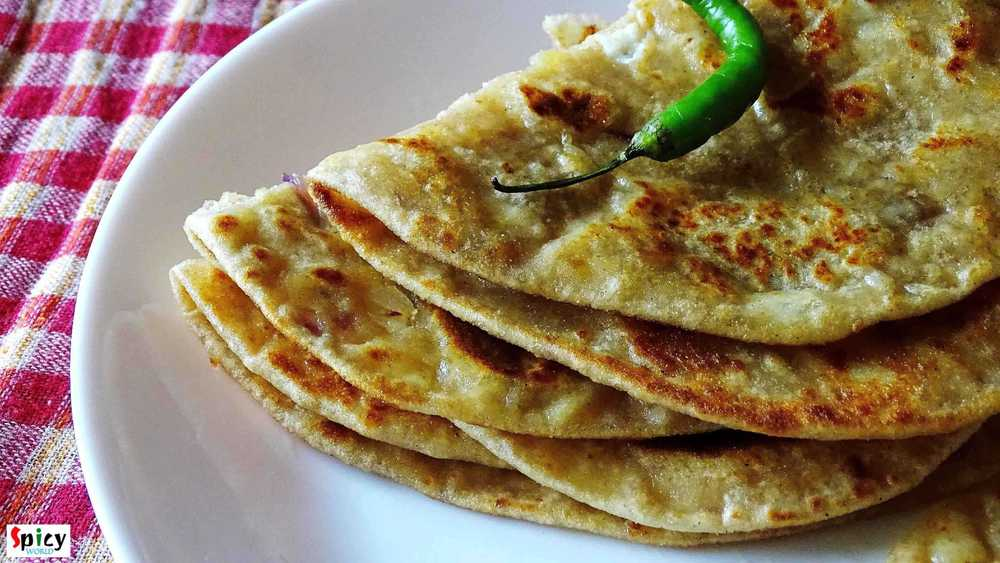

Simple and Easy Recipes

Posts on 'paneer'

Veg Recipe
Feb 18, 2019
Rosogolla is cottage cheese balls cooked and soaked in suger syrup. Rosogolla is a Bengali delicacy. You will get so many flavors of them in Kolkata sweet shops, like Nolen gur / Rose / Mango / Strawberry / Paan / Cardamom and what not! But one of my favorite is Sponge Rosogolla which is plain and simple. They are literally light and soft like sponges! If you follow every tips of this recipe you w ...


Veg Recipe
Dec 27, 2018
Paneer Bhurji is a delicious recipe of crumbled cottage cheese which goes best with plain chapati or paratha or pao. In this recipe, crumbled paneer will be cooked in onion, ginger, garlic, tomato based creamy sauce with some flavorful spices. This paneer bhurji gravy will take very less time to cook. Try this recipe in your kitchen and let me know how it turned out for you.

Veg Recipe
Dec 17, 2018
This palak paneer recipe is the best for weeknight dinner. Usually while making palak paneer, we need several kind of paste like onion paste, tomato puree, spinach paste, ginger garlic paste ... time consuming ! In this recipe everything will be stir fried in little amount of oil then we will make just one paste out of them. Creamy, tasty and buttery palak paneer will be ready in a jiffy ! Do give ...
Nov 4, 2018
Paneer Pakoras are delicious crispy vegetarian appetizer which can be served with mint or tamarind chutney and a cup of strong tea. I cut the paneer cubes from the center and filled it with green chutney as paneer has a bland taste. The recipe is very simple and easy. Your kids will love these Paneer Pakoras. Enjoy the recipe with detailed video.

Veg Recipe
Oct 2, 2018
Paneer Butter Masala has a thick, creamy nut, onion and tomato based sauce with some juicy and lightly fried paneer pieces, also the rich gravy has an aromatic flavor of butter and kasuri methi (dry fenugreek leaves). Those who had 'dhaba' (street side food joints of India) food once in their life knows that no restaurant can replicate their rustic yet delicious taste. Dhaba style paneer butter ma ...

Veg Recipe
Aug 22, 2016
How many of you like the smell of 'capsicum' / green bell pepper in vegetarian dishes ?? I am. Whenever I cook, specially without onion and garlic dishes, most of the time I end up adding capsicum into it ... i know it sounds stupid but surprisingly the taste becomes more yumm ! Today's recipe is about 'paneer rezala', a vegetarian mughlai delicacy, where paneer cubes are cooked in a nut based whi ...

Veg Recipe
Aug 11, 2016
Chanar Dalna is a very hearty vegetarian preparation with simple ingredients. My mom used to serve this curry with 'Luchi' and the pair was heavenly. 'Chana' means curdled milk or homemade paneer and 'Dalna' means curry. Both of them are Bengali words. You can definitely make this dalna on any puja / vrat days as they are onion and garlic free. I have already shared 'chanar kalia' recipe with you ...

Veg Recipe
May 19, 2016
If your milk gets curdled, don't throw away, you can do a lot with it. Well, it's bengali style 'chanar kalia' where plain curdled milk / cheese balls are first deep fried and then cooked in a tomato based gravy. It's a vegetarian delicacy of Bengali cuisine. The dish tastes awesome and goes best with plain basmati rice. In any puja or special occasion, we make this dish and it always becomes the ...

Veg Recipe
Apr 7, 2016
We all love to eat fried stuff, right ? I know they are not that much healthy but still we do like them. I had lots of mushrooms in my fridge and couldn't find any interesting idea how to use them. Then suddenly I saw a picture of some beautifully golden colored veggie pops in google and I also remembered that I had cheese in my fridge. Then there was no confusion that I was going to make some che ...

Veg Recipe
Mar 30, 2016
I have not grown up too much of eating 'paneer' rather I grew up eating fish, chicken, rice, dal and vegetable dishes. I ate paneer in parties and very few times in restaurants. But after coming to US I learned how to make paneer at home and trust me, those self made soft white cubes gave me immense happiness. So, after that day we both have become paneer lover and have tried several dishes. This ...

Veg Recipe
Feb 15, 2016
'Palak paneer' is a famous north indian dish. This is a hit item for spinach lovers. After adding heavy cream the texture will make you greedy. Palak paneer's smooth, rich and velvety gravy is beyond everything. It goes very well with butter naan. It's a no onion and no garlic recipe

Veg Recipe
Dec 29, 2015
Everybody loves paneer, right? Specially when there is a spicy paneer stuffing inside a paratha, I am always up for it. This was my first try on 'paneer paratha' and I just nailed it. Believe me it is much easier than 'aloo paratha'. I made those in breakfast with 'chana masala' and the combo was really gorgeous. Parathas came out perfectly crispy and soft. The taste was unforgettable, we enjoyed ...

Veg Recipe
Dec 10, 2015
Last weekend I wanted to make something new veg maincourse, thats why I chose this 'paneer kofta curry' and it was just delicious. You can make kofta curry with raw banana, jack fruit, chicken, fish, mutton etc. They all tastes really good. I made it with paneer kofta, you can see how good looking they are and by clicking the picture below you can see how it's prepared. I served this curry with pl ...

Veg Recipe
Dec 9, 2015
'Kofta' is a very flexible food item, you can serve them as starter or you can soak them in gravy and serve as maincourse also. This was my very first attempt on 'kofta' and from the beginning I was a bit nervous because I often heard that while frying them, kofta has a chance to break. But I carefully maintained the proportion of ingredients and taaddaaa ...!! All of my 'kofta's came out perfectl ...

Veg Recipe
Dec 7, 2015
'Makhni' is a name of rich, smooth, creamy gravy which is very popular in India. You can make 'chicken makhni', 'paneer makhni', 'kofta curry' and many more dishes with this gravy. I personally love the methi flavour and creaminess about this gravy. We had it in dinner last night with soft butter naans. The combination was heavenly. You just have to try this.
")
Veg Recipe
Dec 5, 2015
In vegetarian world 'paneer' plays a very important role. But in nonvegrtarian world it also offers various special dishes. Homemade paneer has its own frshness and taste. There is no comparison between homemade and store bought. I always use homemade fresh 'paneer' in my cooking. You can make several dishes with this. So, try this in your kitchen and I can give you guarantee that you will never b ...

Veg Recipe
Oct 2, 2015
First time I ate this pulao from one of my favourite aunt. She can turn this simple pulao into something special with her love and care. She really has some magic in her hand and I simply love it. In many gatherings you can make this dish and impress your guest.

Veg Recipe
Sep 30, 2015
Though me and my hubby both are nonveg lovers, but we also love spicy veg dishes. 'Kadai Paneer' is our favourite one. Last night my dinner was this paneer dish along with butter naan. There were no other words but 'delicious and mouth watering' about the combination. The main attraction here is KADAI masala. It gives such a nice flavour in this dish. Just close your eyes and go for it.
Contact Us
Guest Post
Subscribe RSS Feed
User Agreement
Public Presence
Feedback
Free Games
Home
Recipes
Categories
Images
Food Plating
About Me
Guest Post
Subscribe RSS Feed
User Agreement
Public Presence
Feedback
Free Games
Home
Recipes
Categories
Images
Food Plating
About Me
What we offer?
- Recipe Development
- Restaurant & Food Review
- Food Photography
- Website, Blog & Application Development
- UX / UI Designing
- Sponsorship & Advertisement
Contact us via Email
contact@spicyworld.in
Who we Are?


Amitava Ghosh
Website & CMS Designer, Developer and Architect.
Website & CMS Designer, Developer and Architect.